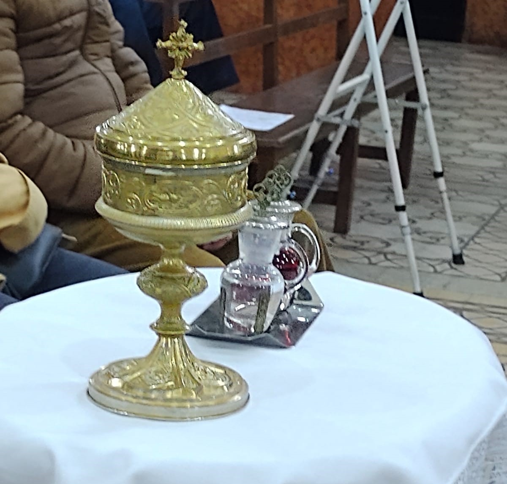

<div class="modal-overlay" (click)="cerrar()">
  <div class="document-page" (click)="$event.stopPropagation()">
    <button class="close-btn" (click)="cerrar()">&times;</button>

    <div class="content">
      <h2>Misas</h2>
      <!-- <p class="subtitle"><i class="fa-regular fa-clock"></i> Sábados a las 12 hs</p> -->

      <div class="info-grid">
        <div class="modal-media">
          
        </div>

        <div class="modal-body">

          <h4>Del 1 de Marzo al 30 de Noviembre <i class="fa-regular fa-clock"></i></h4>
          <ul>
            <li>Lunes a Sábado 07 y 19 horas</li>
            <li>Domingos: 7, 9, 11 y 19 horas</li>
          </ul>

          <h4>Del 1 de Diciembre al 28 de Febrero <i class="fa-regular fa-clock"></i></h4>
          <ul>
            <li>De Lunes a Sábado 07 y 19,30 horas </li>
            <li>Domingos: 7, 9, 11 y 19,30 horas</li>
          </ul>
          <h4>*Confesiones media hora antes de las misas</h4>
        </div>

      </div>
    </div>
  </div>
</div>